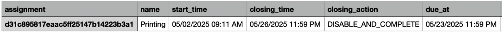
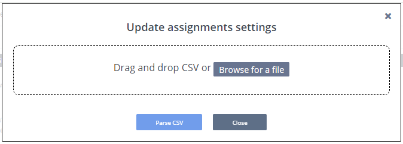
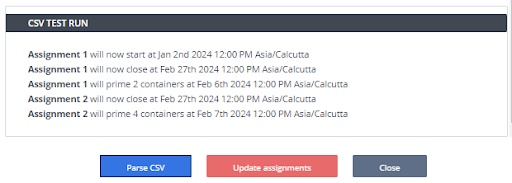

Bulk Assignment Update¶
You have the ability to perform a bulk update for various assignment settings, including start date/time of the assignment, closing date/time of the assignment, action when assignment closes, due dates and penalties. For more information about these settings, see Assignment Duration, Prime Assignment Containers and Virtual Coach settings using a CSV file.
Before you begin, make sure to download the csv template file. You can download the csv template file of your course from “Download Assignment Information setting” present in the “Assignment settings” in the “Bulk Settings area”. You can update the fields as per your requirement(s) and use that csv file to update the assignment settings. Here is a sample screenshot of the csv template:

Things you should know about the csv template:
Header names must be same as row 1 of above CSV
If the specific field is empty then the respective setting will not be updated
All field are case-insensitive so complete and COMPLETE are same
In the column ‘assignment’, instead of Assignment Name you can also use Assignment ID or LTI Integration URL of the assignment for the assignment identification (sometimes you may have multiple assignments with the same name so you can use these other unique identifiers to avoid any conflicts)
Check out Get the Course and Assignment ID to see how you can get the assignment ID.
Check out LTI Integration Assignment URLs to see how you can get LTI Integration URL of the assignment or you can export the LTI Integration URLs of all assignments in the course, see Export LTI Settings
If Prime Setting is not enabled for the assignment but the prime_time is defined in the CSV then the Prime setting will be enabled automatically
Here is a reference guide on how to update your csv template file:
Column Name |
Data Type |
Possible Values |
Description |
|---|---|---|---|
name |
text |
assignment name(s) |
The assignment name goes in this cell. |
start_time |
integer and text |
mm/dd/yyyy h:mm XX 5/2/2025 9:11 AM |
Specify the start time, date (m/d/year) and the time (h:mm) and identify if its morning or night (XX). |
closing_time |
integer and text |
mm/dd/yyyy h:mm XX 05/26/2025 11:59 PM |
Specify the closing time, the date (m/d/year) and the time (h:mm) and identify if its morning or night (XX). |
closing_action |
text |
DISABLE_AND_COMPLETE, DISABLE, COMPLETE |
Specify what action you want to take when the assignment closes. You currently have 3 options:
|
due_at |
integer and text |
mm/dd/yyyy h:mm XX 05/23/2025 11:59 PM |
Specify the due date, the date (m/d/year) and the time (h:mm) and identify if its morning or night (XX). Note: For more information about this setting please visit Assignment Duration |
mark_as_completed_on_due_date |
text |
TRUE, FALSE |
Identify whether you would like the assignment to be marked completed on the due date. |
penalty_enabled |
text |
TRUE, FALSE |
Identify if you want there to be a penalty for late submission of the assignment. |
deduction_interval |
text |
day, hour |
If you have elected to have a penalty (penalty_enabled: TRUE), then in this cell you identify if you want the deduction to be by hour or by day after the due date. |
deduction_percent |
integer |
any whole number |
If you have elected to have a penalty (penalty_enabled: TRUE), then in this cell you identify the deduction percentage. If you want to deduct 5%, then you would just put “5”. |
lowest_grade_percent |
integer |
any whole number between 0 and 100 |
Identify the lowest possible grade a student can receive for this assignment. Note: For more information on penalty deductions, please Penalties |
allow_regrade_request |
text |
TRUE, FALSE |
Identify if you want to allow students to request for a regrade of their assignment. |
prime_time |
integer and text |
mm/dd/yyyy h:mm XX 05/08/2025 06:44 PM |
Specify the Start Time when you want the containers available. Note: For more information about this setting, please visit Prime Assignment Containers |
prime_count |
integer |
any whole number |
In this cell you will specify the Number of Students that will start the assignment at the same time.
|
coach_summarize_prompt |
text |
TRUE, FALSE |
Identify whether the student can request a summary of the assessment prompt or not. |
coach_error_augmentation |
text |
TRUE, FALSE |
Identify whether you want to provide more detailed explanations for error message text on request. |
coach_next_steps_hint |
text |
TRUE, FALSE |
Identify whether the student can request hints for completing the assessment requirements. |
Once you have updated/modified your csv template file now you are ready to bulk update the assignment settings.
To bulk update the assignments settings, follow these steps:
On the Courses page, click the course that contains the assignment you want to edit
Go to Bulk Settings area and press Open Updater button from Update Assignment Setting
Select the CSV file in which you have defined all the required settings and press Parse CSV button

You will see the test result in the CSV Test Run section (you may also see the error messages if something is not correct in your CSV file)

Click Update Assignments to reflect these settings to your actual assignments settings